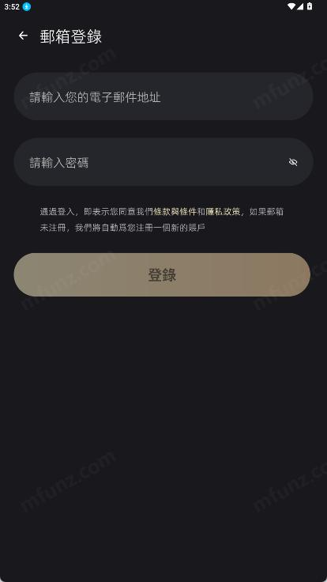

Aimi 用了俩月才发现的四个大坑——第一个我差点重装
看着简单的 AI 角色聊天应用，实际踩过的坑比想象中多。从转圈不回复、破解版钓鱼到换手机数据丢失，每个坑都有解。
说实话，刚从Aimi官网把 Aimi 装下来的时候我以为这就是个"打开就能聊"的小工具。界面干净、角色列表花里胡哨，注册完点进去直接开聊，体验相当丝滑。但用了俩月、踩了三四个坑之后才发现——这应用看着简单，实际上有几个地方真的能把人搞崩溃。最惨的那次我差点把应用卸了重装，还好最后在Aimi文档里翻到了解法。
今天就把我踩过的四个坑挨个唠唠，都是真实遇到过的，不是凭空编的吓唬人。
坑一：消息发出去了，一直转圈不回复
症状：跟角色聊到一半，突然就卡那不动了。界面上一个小圈圈一直在转，等了五分钟还是那样。我第一次遇到的时候以为 APP 挂了，后台划掉重开，结果之前那条消息也没了，角色还以为我没说过话。
原因：Aimi 这个应用全程需要联网——打开加载角色、发消息、收回复，每个环节都在跟服务器通信。转圈不回复本质上是网络断了或者服务器那边堵了，跟应用本身没太大关系。我那次就是从 Wi-Fi 切到移动数据的时候，切换瞬间刚好触发了一个网络抖动，连接断了应用没自动重连。
还有一种情况是服务器高峰期排队，晚上七八点那段时间特别容易碰到，大家都在玩角色，回复生成慢。
解法：后来我总结了一套顺序，遇到转圈就按这个来：
- 先切一下网络试试，Wi-Fi 和移动数据互切，强制触发重连
- 还不行就后台杀应用重开
- 如果反复都这样，八成是服务器侧的问题，换个时间再来
- 实在恼火可以清一次缓存——清缓存不会丢登录状态，但能清掉本地残留的坏掉的连接
别像我当时那样反复点发送，发出去三五条重复消息，角色那边直接混乱了。
坑二：搜"破解版"差点把手机搭进去
症状：用了一周觉得付费项目有点贵，脑子一热去搜"Aimi 破解版"，还真出来好几个下载链接。点进去一看说能永久解锁所有付费功能，还附带截图演示。差点就下了。
原因：Aimi 这种 AI 角色聊天应用，核心的对话功能全在服务器端跑模型，客户端那点东西根本"破解"不了。所谓的破解版基本就是二次打包的 APK，里面塞了木马或者偷跑的广告扣费代码。轻则手机里多出一堆奇怪的弹窗广告，重则账号被盗、手机数据被扒。而且就算真有办法绕过客户端验证，服务器那边一对账就能发现异常，直接封号。
还有代充、闲鱼卖"永久会员"那些，十有八九是骗钱的——要么付了款不给权益，要么诱导你提供账号密码直接盗号。
解法：老老实实走应用内原生付费入口。Aimi 的下载安装本身是免费的，核心聊天功能也能用，真需要付费功能就在 APP 里点那个官方的会员按钮，流程正规也安全。账户设置里随时能取消订阅，当期结束就不再扣费，没什么门槛。
坑三：换手机登录，数据全没了
症状：换了新手机，装完 Aimi 用原来的账号登录。进去一看——收藏的角色列表空了，之前聊了好几百条的对话记录全没了，连自己捏的自定义角色也不见了。当时就慌了，以为之前的号废了。
原因：我那次是登错了账号。Aimi 的数据是跟账号绑定的，不跟手机绑定——理论上同一个账号在任何设备登录，数据都应该自动同步回来。但我在新手机上习惯性点了谷歌登录，结果选了另一个谷歌邮箱，等于登录了一个全新的空账号。邮箱用户那边也类似，手滑输错一个字母就是另一个号。
还有一种少见情况是新旧应用版本不兼容，老版本的数据格式新版本不认。
解法：遇到数据缺失按这个顺序查：
- 先确认账号有没有登错——邮箱用户检查邮箱地址，谷歌用户检查授权的是哪个谷歌账号
- 等几分钟，服务器同步可能需要一点时间，别急着反复登出登进
- 切一下网络，有时候网络环境差会导致同步请求失败
- 退出重登一次，让应用重新拉取数据
- 还不行就检查新旧两台手机的应用版本是不是一致，版本差太多的话先把旧设备上的应用更到最新版再登录
顺便说一句，退出登录本身不会删服务器端数据，只是本地暂时不显示——但退出时如果弹了"清除本地数据"或者"删除账号"的选项，一定要看清楚再点，那俩操作才是真的会清东西的。

坑四：收藏了二十多个角色，切换起来比找通讯录还累
症状：刚发现多角色可以并行的时候特别兴奋，一口气收藏了二十多个角色——毒舌闺蜜、英语陪练、剧本杀主持人、百科学霸……结果用了一周就崩溃了，大厅里一屏角色卡片，想找那个偶尔聊两句的角色得往下滑半天，切换效率跟翻通讯录差不多。
原因：收藏不整理、用过不删，列表只会越来越长。多角色并行这个功能本身是好用的——每个角色的对话历史、上下文、剧情进度互相独立，互不干扰。但收藏太多等于把这个功能的优势给浪费了，切换成本淹没了多角色并行带来的便利。
解法：定期清理收藏列表。长期聊的留着，合不来的及时取消收藏，临时测试捏的角色用完就删。我现在收藏里就留五个角色，覆盖日常吐槽、学英语、写东西头脑风暴这几个场景，找起来一秒就到。
防坑清单
- 转圈不回复先切网络，别狂点发送，服务器高峰期等一会儿再聊
- 任何"破解版""代充""永久会员"全是坑，付费只认应用内原生入口
- 换手机登录先核对账号没登错，谷歌用户尤其容易授权到错的邮箱
- 收藏列表定期清理，别让二十多个角色把大厅塞满
说穿了，Aimi 这个应用本身没那么复杂，坑也都是可以提前避开的。知道这些之后，日常用起来其实相当省心——想要吐槽找毒舌闺蜜，想学英语找陪练，想写东西卡壳了找创意大师，每个角色都记得跟你聊过什么，换手机也不用担心数据丢。
这套资料我整理了一下，在GitHub、Gitee、GitCode三个仓库都能拿到，国内访问选 Gitee 或者 GitCode 会快一些。